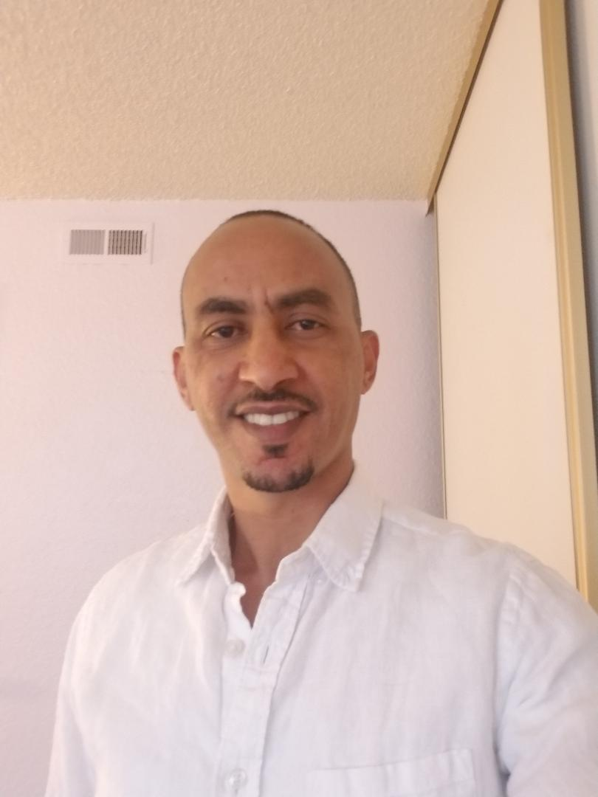

About Me

Full stack web developer with a passion for thoughtful solutions, collaboration, and learning new technologies.
Seeking out meaningful opportunities and challenges are indispensable for success. I am very passionate to engage in the vibrant and dynamic tech field to provide very inventive and innovative solutions. My experience in legal service and management demonstrated my skill in research, counseling, project management and handling issues as well as solving problems both as a leader and as a team member. Likewise, my accomplishment on postgraduate degree is an example that exhibited my enthusiasm to upgrade my knowledge and ability to manage many programs simultaneously and work under pressure.